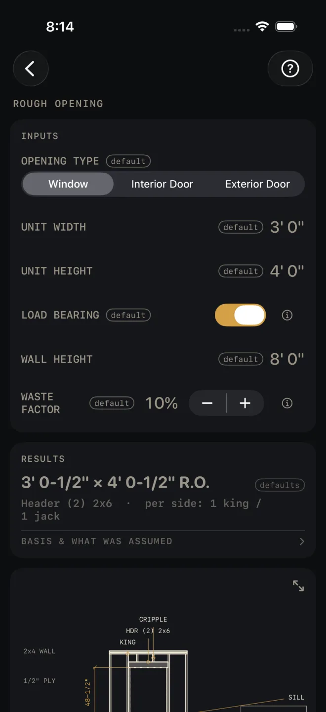
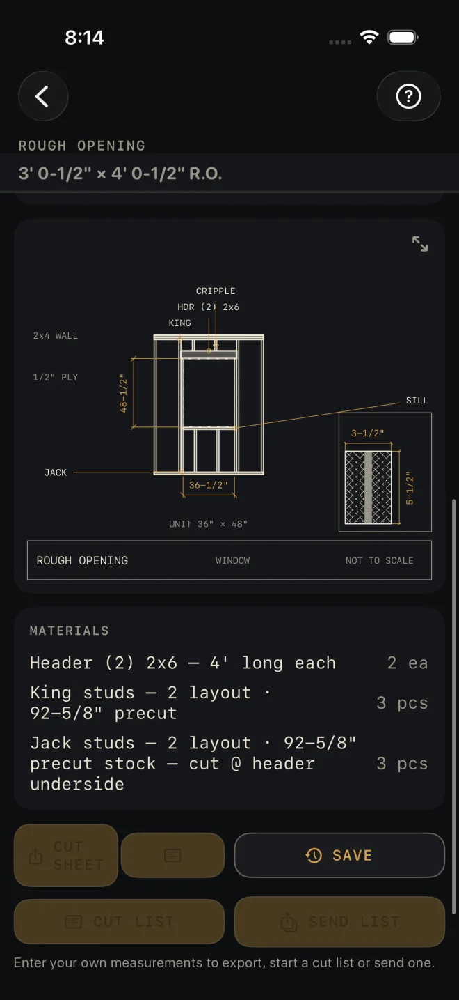

Rough Opening
What it's for
You have the size of a window or door unit and need the framed hole it goes in. Rough Opening gives you the R.O. width and height, the header, the king and jack studs on each side, and a list of what to buy. The header and jacks for a bearing wall come from the lightest-loaded case only, so treat it as a framing takeoff, not a structural check. Size a loaded header in Header Sizing.
Step by step
The example is the screen as it opens: a 3' 0" × 4' 0" window in a bearing wall 8' 0" high.

1 2 3 4 5- OPENING TYPE — pick Window, Interior Door or Exterior Door. The type decides how much is added to the unit size.
- UNIT WIDTH and UNIT HEIGHT — the size of the unit itself, not the hole. For a window, measure the frame outside to outside, or take it from the order sheet. The example is 3' 0" wide and 4' 0" high.
- LOAD BEARING — on if the wall carries floor, ceiling or roof above it. Off for a partition that carries only itself. It opens on.
- WALL HEIGHT — the framed wall, underside of the bottom plate to the top of the double top plate. It sets the stud length the kings and jacks are bought at. A standard height lists a precut stud; any other height lists the exact cut length. The example is 8' 0".
- WASTE FACTOR — the extra you buy over the count, in steps of 5%. The example is 10%.
- Read the RESULTS card: 3' 0-1/2" × 4' 0-1/2" R.O., then Header (2) 2x6 · per side: 1 king / 1 jack.
- Scroll down. The R.O. size stays pinned under the title while you scroll.
- Check the drawing against the opening you are about to frame.
- Read the MATERIALS list for what to buy.
The small ⓘ beside a label gives one sentence on what that input means.
Reading the results

7 8 9The headline is the rough opening, width × height. A window gets 1/2" added to the unit each way. A door gets 2" on the width and 2-1/2" on the height. The word defaults beside it means you have not entered anything yet, so the answer is not your job's.
The line under it is the header and the studs on each side of the opening. If it reads Engineer required the opening is wider than the table the header comes from. No lumber size is offered; get it sized.
BASIS & WHAT WAS ASSUMED — tap it to open. For a bearing wall it states the loading the header and jacks were picked for, and tells you to size the header in the Header calculator if there are floors above. For a window it notes the 1/2" allowance and says to verify the manufacturer's spec. Read it before you order.
The drawing is the opening in elevation with the header, king, jack, cripples and sill named and the R.O. dimensioned, plus a boxed section through the header. Pinch to zoom, drag to move around, double-tap to reset, or tap the expand button at its top right for the whole screen. See Reading the drawing.
MATERIALS is the order. Each header row carries its buy length. The stud rows show two numbers: the quantity on the right is what to buy with waste added, and layout is how many the opening actually uses. In the example that is 3 pcs bought for 2 in the layout. Jacks are bought at the same stud length and cut to the underside of the header on site.
The buttons at the bottom wait for your own numbers: the export buttons stay dimmed, and SAVE tells you to enter them first. After that CUT SHEET shares a PDF with the drawing, the small list button beside it shares the material list alone, SAVE puts the result in History, CUT LIST starts the list on the Lock Screen and SEND LIST sends a checkable list to someone else's phone.
Common mistakes
- Entering the rough opening instead of the unit. The fields are the unit size. The calculator adds the allowance, so an R.O. typed in comes out oversize.
- Leaving LOAD BEARING on for a partition, or off for a bearing wall. It changes the header and the jack count.
- Reading the MATERIALS quantity as the stud count. The quantity includes waste. The layout number in the row is what goes in the wall.
- Using the header here under a floor. The bearing header assumes roof and ceiling only. Anything more goes through Header Sizing.
Related
- Header Sizing — the full header pickers
- Framing — the wall the opening sits in
- Reading the drawing
- Cut sheets and templates
- Cut list on the Lock Screen
- Saving and History